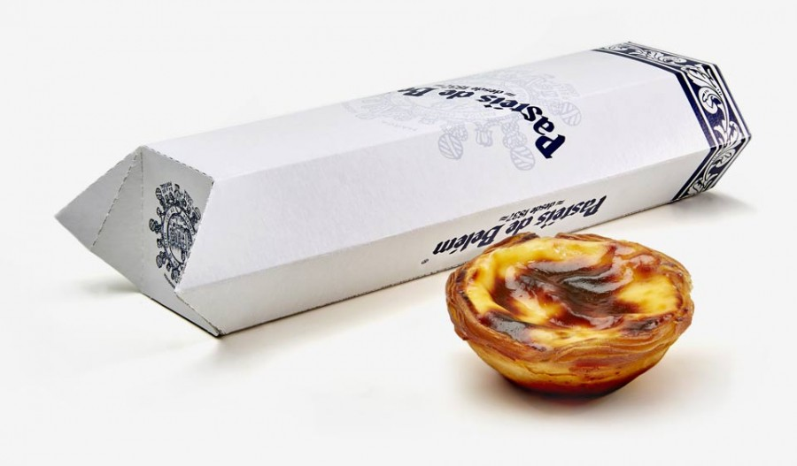

Pasteis de Nata

What Does Pasteis de Nata Mean?
Pasteis de nata is Portuguese for cream pastries — the name describes the velvety texture of this classic dish. The pastel de nata was first made over 300 years ago in a monastery west of Lisbon.
Monks developed the custard-filled treat recipe with sugar and surplus egg yolks — a result of using egg whites to launder clothes. The crisp golden pastry filled with a soft, rich cream is an enticing bite of history.
Ingredients
- 1 cup all-purpose flour
- ¼ teaspoon kosher salt
- ⅓ cup cold water
- 1 stick high-quality unsalted butter, fully softened, divided
- ¾ cup white sugar
- ¼ cup water
- 1 tablespoon water
- 1 cinnamon stick (Optional)
- 1 lemon, zested in large strips (Optional)
- ⅓ cup all-purpose flour
- ¼ teaspoon kosher salt
- 1 ½ cups milk
- 6 large egg yolks
- 1 teaspoon vanilla extract (Optional)
Directions
- Combine flour, salt, and cold water in a bowl. Mix with a wooden spoon until dough just comes together and pulls away from the sides of the bowl. Dough should be sticky; adjust with more flour or water to achieve.
- Transfer dough onto a well-floured surface. Dust a little more flour over the top. Knead for 1 to 2 minutes to form a round. Cover and let rest for 15 to 20 minutes
- Roll dough into a square about 1/8-inch-thick, dusting with flour as necessary; dough should still be sticky.
- Spread 1/3 of the butter over 2/3 of the square using a silicone spatula, leaving a 1/2-inch border. Flip the unbuttered side over the middle of the square and fold the opposite end over it like a letter. Straighten the edges as needed.
- Turn dough with a bench scraper to unstick it from the counter; dust with flour. Flip and sprinkle more flour on top. Roll dough into a 1/8-inch-thick rectangle, carefully stretching edges as needed. Spread another 1/3 of the butter over 2/3 of the dough. Fold into thirds. Transfer onto a lined baking sheet and freeze until butter is slightly chilled, about 10 minutes.
- Sprinkle dough with flour and roll into a square a little over 1/8-inch-thick. Spread remaining butter over the dough, leaving a 1- to 1 1/2-inch border on the top edge. Dip your finger in water and lightly moisten the unbuttered edge. Roll dough into a log starting from the bottom edge. Dust with more flour and polish the ends as needed. Seal with plastic wrap and refrigerate at least 2 hours, preferably overnight.
- Combine sugar, 1/4 cup plus 1 tablespoon water, cinnamon, and lemon zest in a pot. Boil over medium heat, without stirring, until syrup reaches 210 to 215 degrees F (100 degrees C). Remove from heat.
- Preheat the oven to 550 degrees F (288 degrees C). Grease a 12-cup muffin tin.
- Whisk flour, salt, and cold milk together very thoroughly in a cold pot. Cook over medium heat, whisking constantly, until milk thickens, about 5 minutes. Remove from heat and let cool for at least 10 minutes.
- Whisk egg yolks into the cooled milk. Add sugar syrup and vanilla extract. Mix until combined. Strain custard into a glass measuring cup.
- Unwrap the dough and trim any uneven bits on the ends. Score log into 12 even pieces using a knife; cut through.
- Place a piece of dough in each muffin cup. Dip your thumb lightly in some cold water. Press your thumb into the center of the swirl; push dough against the bottom and up the sides of the cup until it reaches least 1/8 inch past the top. Fill each cup 3/4 of the way with custard.
- Bake in the preheated oven until the pastry is browned and bubbly, and the tops start to blister and caramelize, about 12 minutes. Cool tarts briefly and serve warm.